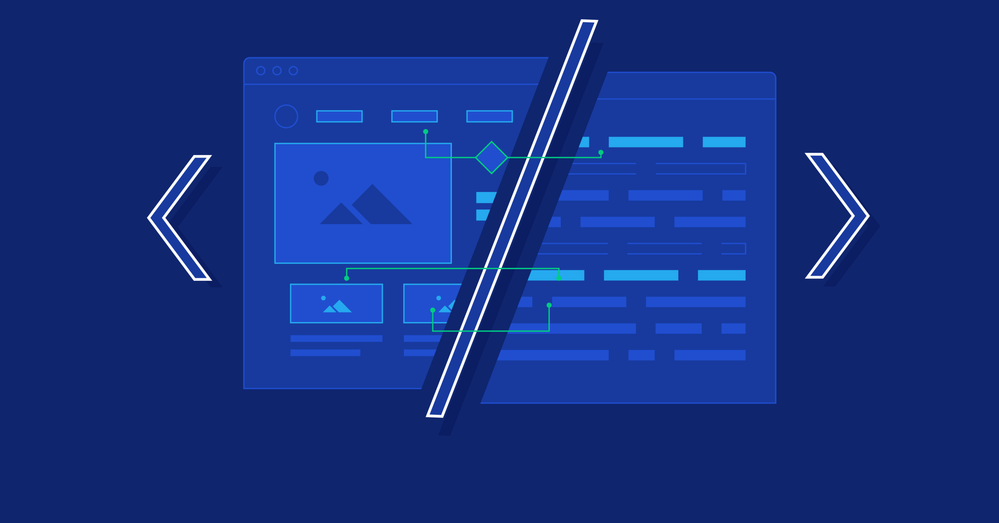

¿Qué es el frontend?
El frontend o «desarrollo del lado del cliente» se refiere a la práctica de producir HTML, CSS y JavaScript. Estos tres elementos se encargan de dar forma a la parte frontal de un sitio web o aplicación. Esto incluye los fondos, colores, texto, animaciones o efectos.
¿Cuáles son los fundamentos del desarrollo front-end?
- Principios del diseño frontend
- Fundamentos de los lenguajes CSS y HTML5
- Lenguajes de preprocesamiento de CSS: LESS y SASS
- Introducción a JQuery
- Actualidad y tendencias en estilo web:
- Tipografía e imágenes para la web.
- Google Material: Tipografía e imágenes
- Fundamentos de layouts y posicionamiento con CSS y HTML 5.
- Responsividad
- Origen, importancia, características y ventajas.
- Mediaqueries en CSS3
- Mediaqueries en CSS3
- Plantillas con Bootstrap
Licenciatura en Sistemas Computacionales
© Copyright 2023. Angel Nahum Aguilar Mtz